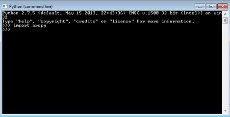
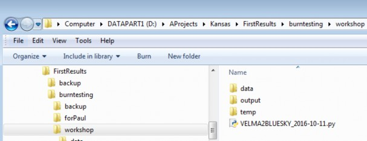
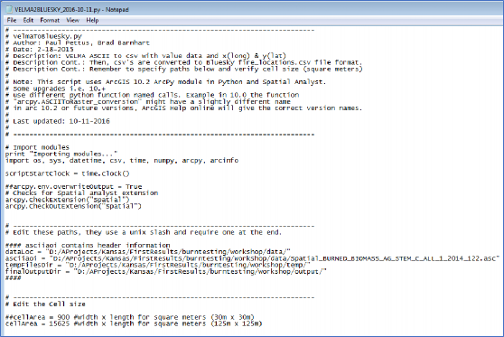
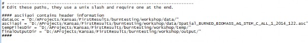
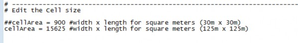
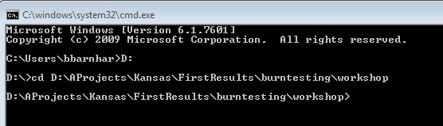
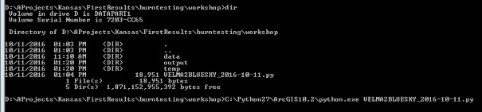
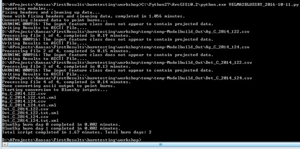
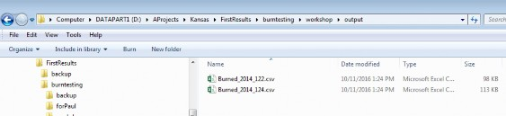

+
D.9 | Set Up VELMA biomass Outputs as Inputs to BlueSky
Overview (Tutorial D.9 - Set Up VELMA biomass Outputs as Inputs to Bluesky)
Bluesky is a smoke emissions simulator that is designed to predict the direction and chemistry of smoke produced by forest and rangeland fires. To do this, Bluesky requires spatially-explicit inputs describing the quantity and quality of fuel loads. VELMA is designed to provide this information.
This document describes how to convert VELMA spatial fuel load output to input for BlueSky.
Software Requirements
To run the algorithm that converts VELMA output to input for the Bluesky smoke emissions simulator, you will need the following:
- Python version 2.x: Current release is 2.7.11
- Python package 'ArcPy' (Requires ArcGIS license)
- Velma2Bluesky Python Algorithm
- Python comes pre-packaged within ArcGIS, so it is likely you already have it installed on your computer. For example, mine is installed currently here: C:\Python27\ArcGIS10.2\python.exe. Check to see if you have Python installed before installing a new version. If Python is not installed, you can obtain a copy here: https://www.python.org/download/releases/2.7/ Note that Python 2.7 is currently considered safe for use on U.S. EPA network and non-network computers.
- ArcPy is a python package that comes pre-installed with ArcGIS. You can test that you have access to ArcPy by opening your Python executable and typing 'import arcpy' into the command line. If you receive no error, then you have ArcPy installed appropriately. If you have problems importing ArcPy, visit http://pro.arcgis.com/en/pro-app/arcpy/get- started/importing-arcpy.htm
- Velma2Bluesky Python Algorithm: This file is called VELMA2BLUESKY.py and can be run using a command line command: "python C:\Path\To\VELMA2BLUESKY.py". It can also be edited directly with any text editor (e.g., Notepad, EMACS)
Steps for running the VELMA2BLUESKY.py script
- First, navigate to the directory that contains the Bluesky script. In this example, the script is called VELMA2BLUESKY_2016-10-11.py, but you can rename it if you would like.
- You can open the file with any text editor, as shown here:
- You will need to change the paths within the script to make it work on your system.
- dataLoc = This should be the path to your data directory that contains VELMA output files.
- asciiaoi = This path points to any single .asc file in the output data directory. The script uses the header of this file to geo-locate the positions of burns.
- tempFilesDir = This directory must be created to store temporary processing files.
- finalOutputDir = This directory will hold the Bluesky inputs after the script is run.
NOTE: The tempFilesDir and finalOutputDir must exist and they must be empty for the script to work properly. If you receive an error, make sure that these paths are correct and that there are no files in the tempFilesDir or finalOutputDir.
Below is an example of a proper specification of paths:
 - You will also need to set the cellArea in the script. You obtain the cellArea variable by squaring the original size of your VELMA cell. That is, if you have a 30m grid, you will input a cellArea = 30x30 = 900.
- To run the script, start by opening a command window. You can also open the script file in IDLE or another Python user environment if you know how to do this. For the command line method, on Windows, click Start -> Search for Programs or Files -> type in "cmd" and click on cmd.exe. Then, navigate to the directory where you have your VELMA files using the 'cd' command.
- Finally, use your python.exe file to run the script using the following command: C:\path\to\python.exe D:\Path\to\VELMA2BLUESKY_2016_10-11.py An example is shown below. Note that my python.exe program is located at C:\Python27\ArcGIS10.2\python.exe
The program will begin and will display the following output. If you receive an error, check the error carefully and determine whether or not you have properly configured your paths and made sure that you have the proper software configuration (ArcGIS with Spatial Analyst, ArcPy, etc.)
 - Check your output directory for output files.
- You can view the output files using a text or spreadsheet editor.
Scripts
# velmaToBluesky.py
# Author: Paul Pettus, Brad Barnhart # Date: 2-18-2015
# Description: VELMA ASCII to csv with value data and x(long) & y(lat)
# Description Cont.: Then, csv's are converted to Bluesky fire_locations.csv file format. # Description Cont.: Remember to specify paths below and verify cell size (square meters) #
# Note: This script uses ArcGIS 10.2 ArcPy module in Python and Spatial Analyst. # Some upgrades i.e. 10.+
# use different python function named calls. Example in 10.0 the function # "arcpy.ASCIIToRaster_conversion" might have a slightly different name
# in arc 10.2 or future versions, ArcGIS Help online will give the correct version names. #
# Last updated: 01-31-2017 #
# Import modules
print "Importing modules..."
import os, sys, datetime, csv, time, numpy, arcpy, arcinfo
scriptStartClock = time.clock() ##arcpy.env.overwriteOutput = True
# Checks for Spatial analyst extension arcpy.CheckExtension("Spatial") arcpy.CheckOutExtension("Spatial")
# 
#### asciiaoi contains header information dataLoc =
"L:/Priv/CORFiles/Projects/Velma/Kansas_Project/VELMA_SETUPS_WORKSHOP/Velma_Outputs/KS_Flint_Cent ral_Small_125m_wbFixup_AST2_2017-01-30_historicBurnPlusGraze/"
asciiaoi = "L:/Priv/CORFiles/Projects/Velma/Kansas_Project/VELMA_SETUPS_WORKSHOP/Velma_Outputs/KS_Flint_Cent ral_Small_125m_wbFixup_AST2_2017-01- 30_historicBurnPlusGraze/Spatial_BURNED_BIOMASS_AG_STEM_C_ALL_1_2000_88.asc"
tempFilesDir = "L:/Priv/CORFiles/Projects/Velma/Kansas_Project/VELMA_SETUPS_WORKSHOP/Velma_Outputs/temp/" finalOutputDir = "L:/Priv/CORFiles/Projects/Velma/Kansas_Project/VELMA_SETUPS_WORKSHOP/Velma_Outputs/toolOutput/" ####
# 
##cellSize = 900 #width x length for square meters (30m x 30m) cellSize = 15625 #width x length for square meters (125m x 125m)img(width="499" height="1" alt="image" src="public/suppImage_249.png")
#
print "Starting data clean up..."
outDirStep1 = tempFilesDir + "temp-HeaderFixed/"
# 
# 
header = readFile.readline() #ncols header += readFile.readline() #nrows header += readFile.readline() #xllcorner header += readFile.readline() #yllcorner header += readFile.readline() #cellsize
header += readFile.readline() #NODATA_value readFile.close()
# 
# 
## Create a list of all input files asciiList = []
for files in os.listdir(dataLoc): if files.endswith(".asc"):
testBit = files in asciiList if testBit == False:
asciiList.append(files) for files in asciiList:
filename = dataLoc + files filesLower = files.lower()
## Load in all four above ground biomass files if "biomass_ag" in filesLower:
fileName, fileExtension = os.path.splitext(files)
Next_poolName, Next_yearID, Next_julianID = fileName.rsplit('_',2) stemAgArray = numpy.loadtxt(filename, skiprows=6, dtype= numpy.float64)
leafAgName = dataLoc+"Spatial_BURNED_BIOMASS_LEAF_C_ALL_1_" + Next_yearID + "_" + Next_julianID +".asc"
leafAgArray = numpy.loadtxt(leafAgName, skiprows=6, dtype= numpy.float64)
stemDetName = dataLoc+"Spatial_BURNED_DETRITUS_AG_STEM_C_ALL_1_" + Next_yearID + "_" + Next_julianID +".asc"
stemDetArray = numpy.loadtxt(stemDetName, skiprows=6, dtype= numpy.float64) leafDetName = dataLoc+"Spatial_BURNED_DETRITUS_LEAF_C_ALL_1_" + Next_yearID + "_" +
Next_julianID +".asc"
leafDetArray = numpy.loadtxt(leafDetName, skiprows=6, dtype= numpy.float64)
row, col = stemAgArray.shape sumAgArray = numpy.zeros((row,col)) sumDetArray = numpy.zeros((row,col))
## Data clean-up: This section ensures that near-zero VELMA output is ## properly accounted for.
for i in xrange(row):
for j in xrange(col):
cellStem = stemAgArray[i,j] cellLeaf = leafAgArray[i,j] cellDetStem = stemDetArray[i,j] cellDetLeaf = leafDetArray[i,j]
# Check for negative values -> to 0 if cellStem < 0 and cellStem != -9999:
cellStem = 0
if cellLeaf < 0 and cellLeaf != -9999: cellLeaf = 0
if cellDetStem < 0 and cellDetStem != -9999: cellDetStem = 0
if cellDetLeaf < 0 and cellDetLeaf != -9999: cellDetLeaf = 0
# Check for values less than 0.001 -> to 0.001
if cellStem <= 0.001 and cellStem != 0 and cellStem != -9999: cellStem = 0.001
if cellLeaf <= 0.001 and cellLeaf != 0 and cellLeaf != -9999: cellLeaf = 0.001
if cellDetStem <= 0.001 and cellDetStem != 0 and cellDetStem != -9999: cellDetStem = 0.001
if cellDetLeaf <= 0.001 and cellDetLeaf != 0 and cellDetLeaf != -9999: cellDetLeaf = 0.001
>= 0.001:
# Check if one cell has a value then all cells must have a value
if cellStem >= 0.001 or cellLeaf >= 0.001 or cellDetStem >= 0.001 or cellDetLeaf
if cellStem < 0.001: cellStem = 0.001
if cellLeaf < 0.001: cellLeaf = 0.001
if cellDetStem < 0.001: cellDetStem = 0.001
if cellDetLeaf < 0.001:
cellDetLeaf = 0.001
float
if cellStem == -9999: sumAgArray[i,j] = -9999.0
sumDetArray[i,j] = -9999.0 else:
# Multiply by 1000 because ArcGIS converts raster to shapefile as int not
sumAgArray[i,j] = (1000*(cellStem + cellLeaf)) sumDetArray[i,j] = (1000*(cellDetStem + cellDetLeaf))
# Writes out live and dead biomass files
asciiOutAgfn = outDirStep1 + "Ag_C_" + Next_yearID + "_" + Next_julianID +".asc" asciiOutDetfn = outDirStep1 + "Det_C_" + Next_yearID + "_" + Next_julianID +".asc" if not os.path.exists(os.path.dirname(asciiOutAgfn)):
os.makedirs(os.path.dirname(asciiOutAgfn)) f = open(asciiOutAgfn, "w")
f.write(header)
numpy.savetxt(f, sumAgArray, fmt="%f") f.close()
f2 = open(asciiOutDetfn, "w") f2.write(header)
numpy.savetxt(f2, sumDetArray, fmt="%f") f2.close()
endClock = time.clock()
totalTime = round(((endClock - startClock)/60),3)
print("Done with fixing headers and zero biomass, completed in " + str(totalTime) + " minutes.")
# 
# 
# 
filesDir = tempFilesDir + "temp-GisFiles/" outDirStep2 = tempFilesDir + "temp-Modelbuild_Out/"
# 
# Process ascii's into point burn data needed for BlueSky input ## Create a list of all input files
asciiList = []
for files in os.listdir(inDirStep2): if files.endswith(".asc"):
testBit = files in asciiList if testBit == False:
asciiList.append(files)
count = 0
for files in asciiList:
## Create output file names startClock = time.clock()
fileName, fileExtension = os.path.splitext(files) asciifn = inDirStep2 + files
tiffn = filesDir + fileName + ".tif"
reclassfn = filesDir + fileName + "_reclass.tif" reclassShape = filesDir + fileName + "_reclass.shp" zonalfn = filesDir + fileName + "_zonal.tif" rastercalc = filesDir + fileName + "_int.tif" zonalShape = filesDir + fileName + "_zonal.shp" pointfn = filesDir + fileName + ".shp"
pointGeofn = filesDir + fileName + "_nad83.shp" csvfn = outDirStep2 + fileName + ".csv"
## Create/check for output dirs
if not os.path.exists(os.path.dirname(tiffn)): os.makedirs(os.path.dirname(tiffn))
if not os.path.exists(os.path.dirname(csvfn)): os.makedirs(os.path.dirname(csvfn))
# Process: ASCII to Raster arcpy.ASCIIToRaster_conversion(asciifn, tiffn, "FLOAT")
# Process: Define Projection arcpy.DefineProjection_management(tiffn,
"PROJCS['NAD_1983_UTM_Zone_14N',GEOGCS['GCS_North_American_1983',DATUM['D_North_American_1983',SP HEROID['GRS_1980',6378137.0,298.257222101]],PRIMEM['Greenwich',0.0],UNIT['Degree',0.0174532925199
433]],PROJECTION['Transverse_Mercator'],PARAMETER['False_Easting',500000.0],PARAMETER['False_Nort hing',0.0],PARAMETER['Central_Meridian',- 99.0],PARAMETER['Scale_Factor',0.9996],PARAMETER['Latitude_Of_Origin',0.0],UNIT['Meter',1.0]]")
# Process: Reclassify
arcpy.gp.Reclassify_sa(tiffn, "Value", "0 0;0 100000000 1", reclassfn, "DATA")
# Process: Raster to Polygon
arcpy.RasterToPolygon_conversion(reclassfn, reclassShape, "NO_SIMPLIFY", "VALUE")
# Process: Zonal Statistics
arcpy.gp.ZonalStatistics_sa(reclassShape, "ID", tiffn, zonalfn, "SUM", "DATA")
# Process: Raster math convert to int myZonalRaster = arcpy.Raster(zonalfn)
## intRaster = arcpy.sa.Int(myZonalRaster*100000) ## moved to data clean up section intRaster = arcpy.sa.Int(myZonalRaster)
intRaster.save(rastercalc)
# Process: Raster to Polygon
arcpy.RasterToPolygon_conversion(rastercalc, zonalShape, "NO_SIMPLIFY", "VALUE")
# Process: Add Geometry Attributes arcpy.AddGeometryAttributes_management(zonalShape, "AREA", "", "SQUARE_METERS", "")
# Process: Feature To Point arcpy.FeatureToPoint_management(zonalShape, pointfn, "INSIDE")
# Process: Project arcpy.Project_management(pointfn, pointGeofn,
"GEOGCS['GCS_North_American_1983',DATUM['D_North_American_1983',SPHEROID['GRS_1980',6378137.0,298
.257222101]],PRIMEM['Greenwich',0.0],UNIT['Degree',0.0174532925199433]]", "", "")
# Process: Export Feature Attribute to ASCII Process: Add XY Coordinates arcpy.ExportXYv_stats(pointGeofn, "FID;ID;GRIDCODE;POLY_AREA", "COMMA", csvfn,
"ADD_FIELD_NAMES") # fix this?
endClock = time.clock()
totalTime = round(((endClock - startClock)/60),2) count = count + 1
print("Processed VELMA Burn day layer " + str(count) + " completed in " + str(totalTime) + " minutes.")
print "Done with converting VELMA BURN ASCII OUTPUT TO CSV FILES!"
# 
# 
# 
asciiList = []
for files in os.listdir(inDirStep3): print files
if files.endswith(".csv"): testBit = files in asciiList if testBit == False:
asciiList.append(files)
#for files in os.listdir(inDirStep3):
# if files.endswith(".csv"):
# asciiList.append(files)
##BLB proposed CHANGED TO GET CSV FILES ########################################
## Bluesky header format
header = ["date_time","id","type","latitude","longitude","area","fuel_1hr","fuel_10hr", "fuel_100hr","fuel_1khr","fuel_10khr","fuel_gt10khr","shrub","grass","rot", "duff","litter","canopy"]
colNumber = 8
# id VELMA + unique id # File name
idNumber = 0
count = 0
for files in asciiList: startClock = time.clock() filesLower = files.lower()
fileName, fileExtension = os.path.splitext(files)
Next_poolName, Next_yearID, Next_julianID = fileName.rsplit('_',2)
date = datetime.datetime(int(Next_yearID),1,1) + datetime.timedelta((int(Next_julianID)-1)) outDate = date.strftime('%Y%m%d') + "0000Z"
fileList = []
if "ag_c_" in filesLower: dateList = []
idList = [] typeList = [] areaList = [] fuel_1hrList = [] fuel_10hrList = [] fuel_100hrList = [] fuel_1khrList = [] fuel_10khrList = []
fuel_gt10khrList = [] shrubList = [] rotList = [] litterList = [] canopyList = []
typeBurn = "RX" idNumber = 0
fuel_1hr = 0
fuel_10hr = 0
fuel_100hr = 0
fuel_1khr = 0
fuel_10khr = 0
fuel_gt10khr = 0
shrub = 0
rot = 0
litter = 0
canopy = 0
agArray = numpy.loadtxt(inDirStep3+files, dtype='float', skiprows=1,delimiter=',') agFilePathName = inDirStep3+files
detFilePathName = agFilePathName.replace("Ag_C","Det_C")
detArray = numpy.loadtxt(detFilePathName, dtype='float', skiprows=1,delimiter=',')
selectAgArray = agArray[agArray[:,4] > 0] outAgArray = numpy.multiply(selectAgArray[:,4],1)
divAgArray = numpy.divide(outAgArray,1000) # Adjustment from int(ArcGIS) back to float row = divAgArray.shape
for i in xrange(row[0]): # Values below 1g/m^2 are returned to zero from pre- process VELMA-ascii
cellValue = divAgArray[i]
if cellValue < 1: divAgArray[i] = 0
sumAgArray = numpy.multiply(2,divAgArray) sumAgArray = numpy.multiply(0.00446089,sumAgArray)
cellCount = numpy.divide(selectAgArray[:,5],cellSize) sumAgArray = numpy.divide(sumAgArray,cellCount) dataAgList = list(sumAgArray)
#Notes on conversions. Multiply by 2 to go from Carbon to Biomass #Then, divide by m2 area in a single cell.
#Then, convert g/m2 to tons/acre
selectDetArray = detArray[detArray[:,4] > 0] outDetArray = numpy.multiply(selectDetArray[:,4],1)
divDetArray = numpy.divide(outDetArray,1000) # Adjustment from int(ArcGIS) back to float row = divDetArray.shape
for i in xrange(row[0]): # Values below 1g/m^2 are returned to zero from pre- process VELMA-ascii
cellValue = divDetArray[i] if cellValue < 1:
divDetArray[i] = 0
sumDetArray = numpy.multiply(2,divDetArray) sumDetArray = numpy.multiply(0.00446089,sumDetArray) cellCount = numpy.divide(selectAgArray[:,5],cellSize) sumDetArray = numpy.divide(sumDetArray,cellCount) dataDetList = list(sumDetArray)
#Notes on conversions. Multiply by 2 to go from Carbon to Biomass #Then, divide by m2 area in a single cell.
#Then, convert g/m2 to tons/acre
inRow2,inCol = selectAgArray.shape for i in range(inRow2):
idName = "VELMA_"+str(idNumber)+"_"+outDate idList.append(idName) dateList.append(outDate) typeList.append(typeBurn)
## areaList.append(area) fuel_1hrList.append(fuel_1hr) fuel_10hrList.append(fuel_10hr) fuel_100hrList.append(fuel_100hr) fuel_1khrList.append(fuel_1khr) fuel_10khrList.append(fuel_10khr) fuel_gt10khrList.append(fuel_gt10khr) shrubList.append(shrub) rotList.append(rot) litterList.append(litter) canopyList.append(canopy)
idNumber = idNumber + 1
##date_time,id,type,latitude,longitude,area,fuel_1hr,fuel_10hr,fuel_100hr,fuel_1khr,fuel_10khr,fu el_gt10khr,shrub,grass,rot,duff,litter,canopy
fileList.append(dateList) fileList.append(idList) fileList.append(typeList) fileList.append(list(selectDetArray[:,1])) fileList.append(list(selectDetArray[:,0]))
areaList = numpy.divide(selectDetArray[:,5],4046.863) # Converts Square meters to acre fileList.append(list(areaList))
fileList.append(fuel_1hrList) fileList.append(fuel_10hrList) fileList.append(fuel_100hrList) fileList.append(fuel_1khrList) fileList.append(fuel_10khrList) fileList.append(fuel_gt10khrList) fileList.append(shrubList) fileList.append(dataAgList) fileList.append(rotList) fileList.append(dataDetList)
fileList.append(litterList) fileList.append(canopyList)
flippedList = zip(*fileList)
############################################################
## Add two leading zero("00") digits to julian days 1-9 ## Add one leading zero("0") digits to julian days 10-99
if len(Next_julianID) == 1:
Next_julianID = "00" + Next_julianID
if len(Next_julianID) == 2:
Next_julianID = "0" + Next_julianID ############################################################
outfn = outDir + "Burned_" + Next_yearID + "_" + Next_julianID + ".csv" if not os.path.exists(os.path.dirname(outfn)):
os.makedirs(os.path.dirname(outfn))
## Write out Bluesky input file for burn day outfile = open(outfn,'w')
out = csv.writer(outfile, delimiter=',', lineterminator='\n') out.writerow(header)
for i in flippedList: out.writerow(i)
outfile.close() endClock = time.clock()
totalTime = round(((endClock - startClock)/60),3)
print("ASCII BlueSky Burn day" + str(count) + " completed in " + str(totalTime) + " minutes.")
count = count + 1
############################################################
## Create a master list merged burn csv if count == 1:
outfnMerge = outDir + "Burned_Merge_Complete.csv" outfileMerge = open(outfnMerge,'w')
out2 = csv.writer(outfileMerge, delimiter=',', lineterminator='\n') out2.writerow(header)
for i in flippedList: out2.writerow(i)
elif count > 1 and count < (len(asciiList)/2): for i in flippedList:
out2.writerow(i)
else:
for i in flippedList: out2.writerow(i)
outfileMerge.close() ############################################################
sciptEndClock = time.clock()
totalTime = round(((sciptEndClock - scriptStartClock)/60),2)
print("Total script completed in " + str(totalTime) + " minutes. Total burn days: " + str(count))